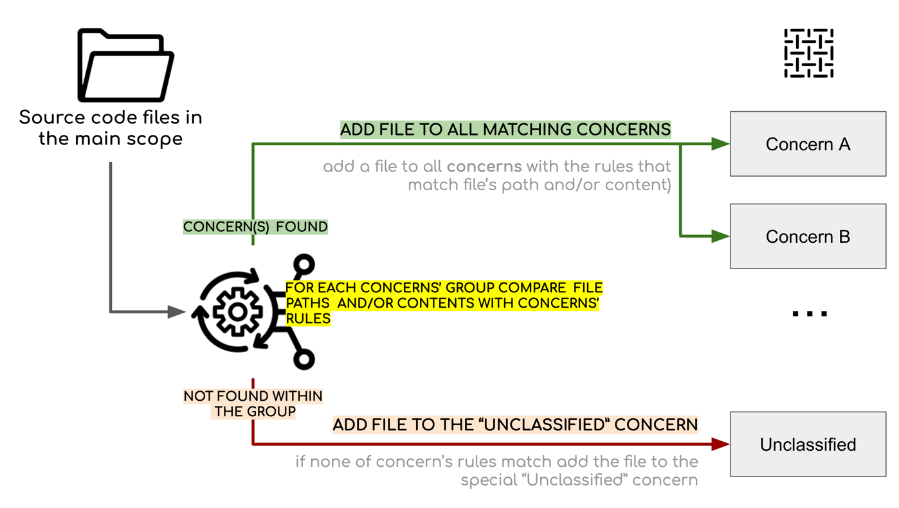
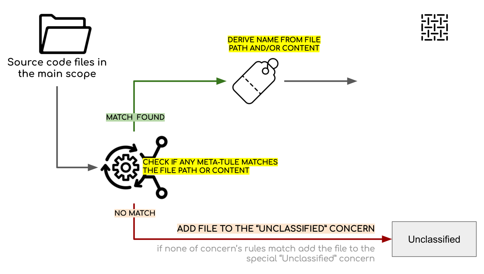
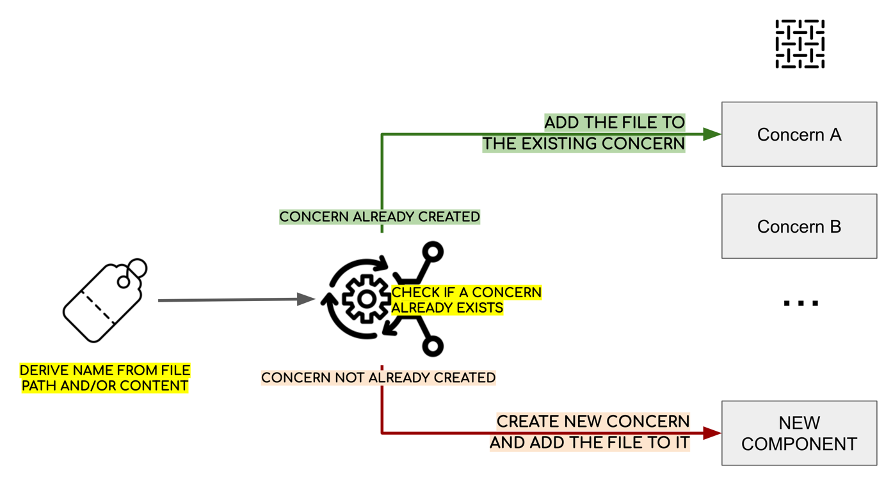

Concerns
Concerns are any aspects of a software system that can be identified thourgh patterns in code.
A single concern may be present in multiple files. One source code file may contain multiple concerns.
A Sokrates enables defining multiple groups of concerns for each system.
Concerns can be defined in two ways in Sokrates.
The first approach is based on explicit definition of each concern. In such explicit definitions, concerns are explicitly named and their files are selected based on explicitly defined path and content filters.

Figure 1: Classification of files based on the static list of concern rules. For each such rule, you need to specify a name of the concern and a list of regular expressions for including the files in the concern..
{
"name": "general",
"concerns": [
{
"name": "exception handling",
"sourceFileFilters": [
{
"pathPattern": ".*[.]java",
"contentPattern": ".* try \\{.*",
"include": true,
"note": ""
}
]
},
{
"name": "logging",
"sourceFileFilters": [
{
"pathPattern": "",
"contentPattern": "import .*logging[.]Log.*",
"include": true,
"note": ""
}
]
},
{
"name": "file operations",
"sourceFileFilters": [
{
"pathPattern": "",
"contentPattern": "import .*java[.]io[.]File.*",
"include": true,
"note": ""
}
]
}
]
}Figure 2: A fragment of the Sokrates configuration file for expectedly defining concerns.
The second approach is based on dynamic definition of concerns and their names. In such dynamic definitions, concerns are not explicitly named, but their names are derived based on script with string transformations of file path or content.
 
Figure 3: Classification based on the dynamic concern rules. Sokrates derives names of concerns dynamically based on the string transformations of file paths or content.
{
"name": "general",
"concerns": [],
"metaConcerns": [
{
"pathPattern": "",
"contentPattern": "import (com|org)[.][a-z0-9_]+[.].*",
"use": "content",
"ignoreComments": false,
"nameOperations": [
{
"op": "extract",
"params": [
"(com|org)[.][a-z0-9_]+"
]
}
]
}
]
}Figure 4: A fragment of the Sokrates configuration file for dynamically defining concerns.